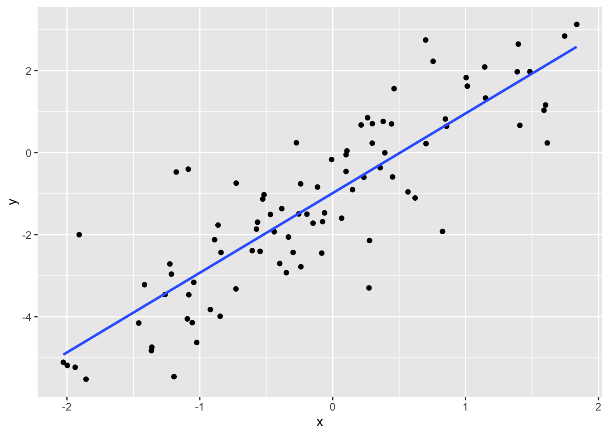
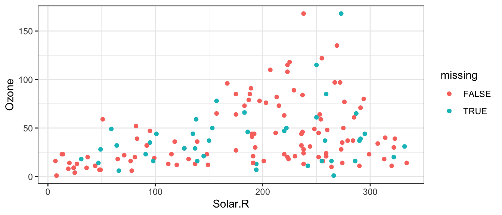

Chapter 12 Regression when data are missing: multiple imputation
Caution: in a highly developmental stage! See Section 1.1.
(DSCI 562 Tutorial)
suppressPackageStartupMessages(library(tidyverse))
suppressPackageStartupMessages(library(mice))Let’s take a closer look at mean imputation vs. multiple imputation.
12.1 Mean Imputation
Let’s consider a simple linear regression example, with one explanatory variable. We’ll generate 100 data points, and make 10 of the response values missing.
set.seed(13)
x <- rnorm(100)
y <- -1 + 2 * x + rnorm(100)
y[1:10] <- NAHere are the data:
x## [1] 0.55432694 -0.28027194 1.77516337 0.18732012 1.14252615 0.41552613
## [7] 1.22950656 0.23667967 -0.36538277 1.10514427 -1.09359397 0.46187091
## [13] -1.36098453 -1.85602715 -0.43985541 -0.19394690 1.39643151 0.10066325
## [19] -0.11443881 0.70222523 0.26254267 1.83616330 0.35740242 -1.04541013
## [25] 0.62018413 0.14935453 -1.45931685 -2.02704380 -1.05695776 -0.72814372
## [31] -0.00821067 0.84779738 -0.38349150 -0.52651151 -0.27322596 -0.60574161
## [37] -0.33286731 -0.24153755 -0.86277540 -0.84697075 0.10034035 1.59003353
## [43] 0.56649488 1.61447949 -0.46865016 -0.72610140 -1.02333900 -1.93781553
## [49] 0.27714729 1.40835367 0.27312919 0.75552507 -0.34901841 -0.54619076
## [55] 0.23436199 -0.29782822 -0.84047613 0.82651036 1.48369123 0.69967564
## [61] -1.26157415 0.29827174 -0.14780711 -0.88892233 1.01306586 -0.92052508
## [67] -0.57389450 1.15036548 1.14382456 -0.23944276 -1.08680215 -0.06144699
## [73] -0.51669734 -1.90767369 0.10715648 -1.17737519 1.74542691 -0.39869853
## [79] 0.44243942 0.45027946 -0.07606216 0.29751322 -1.19435471 -1.99687548
## [85] 1.38851305 -0.08248357 0.39251449 -1.08276971 1.60212039 1.00406897
## [91] 0.37989570 -0.56550536 -1.21377810 -1.36430159 -1.41613295 -0.25557803
## [97] -1.22542595 0.21383426 0.06722356 0.85663511y## [1] NA NA NA NA NA
## [6] NA NA NA NA NA
## [11] -4.053704654 1.559887706 -4.743071625 -5.523818780 -1.930473677
## [16] -1.500485206 2.645513317 -0.051326812 -0.839409352 0.218430884
## [21] 0.850566209 3.126514212 -0.368543711 -3.162228622 -1.105128040
## [26] -0.902167648 -4.154972172 -5.111932100 -4.145855361 -3.322836591
## [31] -0.168810384 0.819016643 -1.365461091 -1.130697319 0.240141538
## [36] -2.390779077 -2.058218000 -0.761012345 -1.767026541 -3.989408584
## [41] -0.459957593 1.032304370 -0.957928133 0.235330176 -1.507042163
## [46] -0.745023600 -4.628929629 -5.232634575 -2.144358973 0.664736992
## [51] -3.298505466 2.225627728 -2.926853644 -2.406454479 -0.601188334
## [56] -2.433257875 -2.434091710 -1.922107514 1.971684397 2.745313865
## [61] -3.459211491 0.705772270 -1.719688562 -2.123423177 1.619808115
## [66] -3.826059870 -1.864032144 1.330204157 2.087342480 -2.782158129
## [71] -0.403227138 -1.468562228 -1.026899366 -2.000743246 0.042009453
## [76] -0.473418979 2.841051621 -2.703355211 0.700489075 -0.592450346
## [81] -1.683073694 0.229914942 -5.462264420 -5.187776409 1.969480413
## [86] -2.450285233 -0.005289845 -3.465216049 1.160366954 1.827202816
## [91] 0.761346358 -1.696197511 -2.962489498 -4.827255075 -3.221340010
## [96] -1.494866659 -2.714534509 0.673879626 -1.598181064 0.641959448Here’s the scatterplot with the missing data removed, and the corresponding linear regression fit:
p <- qplot(x, y) + geom_smooth(method="lm", se=FALSE)
p## `geom_smooth()` using formula 'y ~ x'## Warning: Removed 10 rows containing non-finite values (stat_smooth).## Warning: Removed 10 rows containing missing values (geom_point).
The mean imputation method replaces the NA’s with an estimate for the mean of \(Y\). The simplest case is to use the sample average of the response. The imputed observations are shown in red, and the resulting lm fit is also in red.
ybar <- mean(y, na.rm=TRUE)
datrm <- na.omit(data.frame(x=x, y=y))
datimp <- data.frame(x=x[1:10], y=ybar)
p + geom_point(data=datimp, colour="red") +
geom_smooth(data=rbind(datrm, datimp), method="lm", se=FALSE, colour="red")## `geom_smooth()` using formula 'y ~ x'## Warning: Removed 10 rows containing non-finite values (stat_smooth).## `geom_smooth()` using formula 'y ~ x'## Warning: Removed 10 rows containing missing values (geom_point).
Notice that the new regression line is flatter.
Another mean-imputation method is to replace the NA’s with an alternative mean estimate: the regression predictions.
fit2 <- lm(y ~ x, na.action=na.omit)
yhat <- predict(fit2, newdata=data.frame(x=x[1:10]))
datimp2 <- data.frame(x=x[1:10], y=yhat)
p + geom_point(data=datimp2, colour="red") +
geom_smooth(data=rbind(datrm, datimp2), method="lm", se=FALSE, colour="red", size=0.5)## `geom_smooth()` using formula 'y ~ x'## Warning: Removed 10 rows containing non-finite values (stat_smooth).## `geom_smooth()` using formula 'y ~ x'## Warning: Removed 10 rows containing missing values (geom_point).
The regression line has not changed. This method seems smarter, but it still has consequences, since the imputed data suggests that the dataset is bound closer to the regression line than reality. So the residual variance is biased to be smaller.
These are both mean imputation methods. So, in your Lab 2 assignment, you can use any mean imputation method – your explanation of the comparison will just depend on what you choose.
12.2 Multiple Imputation
Recall that multiple imputation is a technique for handling missing data. It replaces the missing data with many plausible values, to obtain mutliple data sets. An analysis is done on each data set, and the results are combined.
A very powerful R package to assist with multiple imputation is the mice package. Some key things that it does:
- Displays patterns in missing data.
- Imputes data to obtain multiple data sets.
- Pools multiple analyses into one.
We’ll look at the airquality dataset in R.
head(airquality)## Ozone Solar.R Wind Temp Month Day
## 1 41 190 7.4 67 5 1
## 2 36 118 8.0 72 5 2
## 3 12 149 12.6 74 5 3
## 4 18 313 11.5 62 5 4
## 5 NA NA 14.3 56 5 5
## 6 28 NA 14.9 66 5 612.2.1 Patterns
Where are the NAs?
md.pattern(airquality)
## Wind Temp Month Day Solar.R Ozone
## 111 1 1 1 1 1 1 0
## 35 1 1 1 1 1 0 1
## 5 1 1 1 1 0 1 1
## 2 1 1 1 1 0 0 2
## 0 0 0 0 7 37 44A “1” indicates that an observation is present, and a “0” indicates absense. The periphery of the matrix are counts: to the right, are the number of NAs in the row; at the bottom, are the number of NAs in each column; to the left, are the number of observations having a missing data pattern indicated in the matrix.
So we can see that there are 7 missing Solar Radiation observations, and 37 missing Ozone observations. We could check that in another way as follows:
sum(is.na(airquality$Solar.R))## [1] 7sum(is.na(airquality$Ozone))## [1] 3712.2.2 Multiple Imputation
There are many methods of doing an imputation. But generally, they use other columns in the data set to do prediction on the missing data.
The function to do this is mice. Let’s impute 50 data sets using the “Predictive Mean Matching” method.
(dats <- mice(airquality, m=50, method="pmm", seed=123, printFlag=FALSE))## Class: mids
## Number of multiple imputations: 50
## Imputation methods:
## Ozone Solar.R Wind Temp Month Day
## "pmm" "pmm" "" "" "" ""
## PredictorMatrix:
## Ozone Solar.R Wind Temp Month Day
## Ozone 0 1 1 1 1 1
## Solar.R 1 0 1 1 1 1
## Wind 1 1 0 1 1 1
## Temp 1 1 1 0 1 1
## Month 1 1 1 1 0 1
## Day 1 1 1 1 1 0The m argument is the number of imputed datasets. method is the method (you can check out the other methods in the “Details” part of the documentation of mice). Because there’s a random component to the imputation, seed indicates the seed to initiate the random number generator – useful for reproducibility! Finally, I didn’t want mice to be verbose with its output, so I silenced it with printFlag=FALSE.
dats isn’t just a list of 50 datasets. It has more information bundled in it. The info is bundled in an object of type “mids”:
class(dats)## [1] "mids"But we can extract the data sets. Want to see the fourth imputed data set? Here it is:
head(mice::complete(dats, 4))## Ozone Solar.R Wind Temp Month Day
## 1 41 190 7.4 67 5 1
## 2 36 118 8.0 72 5 2
## 3 12 149 12.6 74 5 3
## 4 18 313 11.5 62 5 4
## 5 6 320 14.3 56 5 5
## 6 28 276 14.9 66 5 612.2.3 Pooling
The mice package allows you to pool many types of regression analyses. Let’s try a simple linear regression to predict Ozone from Solar.R, Wind, and Temp. You’ll need to use base R’s with function.
fits <- with(dats, lm(Ozone ~ Solar.R + Wind + Temp))If you were to print fits to the screen, it would look like a list of 50 regression fits – one for each of the imputed data sets. But it’s not. Take a look:
names(fits)## [1] "call" "call1" "nmis" "analyses"Like dats, fits has more info in it. But it does have the 50 regression fits. And they can be pooled using the pool function:
(fit <- pool(fits))## Class: mipo m = 50
## term m estimate ubar b t dfcom
## 1 (Intercept) 50 -61.74901609 3.860658e+02 1.525150e+02 5.416310e+02 149
## 2 Solar.R 50 0.05819172 4.158538e-04 1.053628e-04 5.233239e-04 149
## 3 Wind 50 -3.13670807 3.187991e-01 1.513848e-01 4.732116e-01 149
## 4 Temp 50 1.59560738 4.740713e-02 1.286813e-02 6.053263e-02 149
## df riv lambda fmi
## 1 89.08804 0.4029502 0.2872163 0.3026968
## 2 106.16681 0.2584324 0.2053606 0.2199188
## 3 81.51324 0.4843567 0.3263075 0.3422504
## 4 103.69822 0.2768675 0.2168334 0.2315134summary(fit)## term estimate std.error statistic df p.value
## 1 (Intercept) -61.74901609 23.27296769 -2.653251 89.08804 9.439329e-03
## 2 Solar.R 0.05819172 0.02287627 2.543759 106.16681 1.240661e-02
## 3 Wind -3.13670807 0.68790380 -4.559806 81.51324 1.782885e-05
## 4 Temp 1.59560738 0.24603380 6.485318 103.69822 3.068203e-09And there are the results of the pooled fit. This pooling works for more than just lm!
suppressPackageStartupMessages(library(tidyverse))
suppressPackageStartupMessages(library(broom))
suppressPackageStartupMessages(library(mice))Consider predicting the air quality (ozone levels) in New York mid-year. We’ll use the airquality dataset, recorded for mid 1973:
airquality## Ozone Solar.R Wind Temp Month Day
## 1 41 190 7.4 67 5 1
## 2 36 118 8.0 72 5 2
## 3 12 149 12.6 74 5 3
## 4 18 313 11.5 62 5 4
## 5 NA NA 14.3 56 5 5
## 6 28 NA 14.9 66 5 6
## 7 23 299 8.6 65 5 7
## 8 19 99 13.8 59 5 8
## 9 8 19 20.1 61 5 9
## 10 NA 194 8.6 69 5 10
## 11 7 NA 6.9 74 5 11
## 12 16 256 9.7 69 5 12
## 13 11 290 9.2 66 5 13
## 14 14 274 10.9 68 5 14
## 15 18 65 13.2 58 5 15
## 16 14 334 11.5 64 5 16
## 17 34 307 12.0 66 5 17
## 18 6 78 18.4 57 5 18
## 19 30 322 11.5 68 5 19
## 20 11 44 9.7 62 5 20
## 21 1 8 9.7 59 5 21
## 22 11 320 16.6 73 5 22
## 23 4 25 9.7 61 5 23
## 24 32 92 12.0 61 5 24
## 25 NA 66 16.6 57 5 25
## 26 NA 266 14.9 58 5 26
## 27 NA NA 8.0 57 5 27
## 28 23 13 12.0 67 5 28
## 29 45 252 14.9 81 5 29
## 30 115 223 5.7 79 5 30
## 31 37 279 7.4 76 5 31
## 32 NA 286 8.6 78 6 1
## 33 NA 287 9.7 74 6 2
## 34 NA 242 16.1 67 6 3
## 35 NA 186 9.2 84 6 4
## 36 NA 220 8.6 85 6 5
## 37 NA 264 14.3 79 6 6
## 38 29 127 9.7 82 6 7
## 39 NA 273 6.9 87 6 8
## 40 71 291 13.8 90 6 9
## 41 39 323 11.5 87 6 10
## 42 NA 259 10.9 93 6 11
## 43 NA 250 9.2 92 6 12
## 44 23 148 8.0 82 6 13
## 45 NA 332 13.8 80 6 14
## 46 NA 322 11.5 79 6 15
## 47 21 191 14.9 77 6 16
## 48 37 284 20.7 72 6 17
## 49 20 37 9.2 65 6 18
## 50 12 120 11.5 73 6 19
## 51 13 137 10.3 76 6 20
## 52 NA 150 6.3 77 6 21
## 53 NA 59 1.7 76 6 22
## 54 NA 91 4.6 76 6 23
## 55 NA 250 6.3 76 6 24
## 56 NA 135 8.0 75 6 25
## 57 NA 127 8.0 78 6 26
## 58 NA 47 10.3 73 6 27
## 59 NA 98 11.5 80 6 28
## 60 NA 31 14.9 77 6 29
## 61 NA 138 8.0 83 6 30
## 62 135 269 4.1 84 7 1
## 63 49 248 9.2 85 7 2
## 64 32 236 9.2 81 7 3
## 65 NA 101 10.9 84 7 4
## 66 64 175 4.6 83 7 5
## 67 40 314 10.9 83 7 6
## 68 77 276 5.1 88 7 7
## 69 97 267 6.3 92 7 8
## 70 97 272 5.7 92 7 9
## 71 85 175 7.4 89 7 10
## 72 NA 139 8.6 82 7 11
## 73 10 264 14.3 73 7 12
## 74 27 175 14.9 81 7 13
## 75 NA 291 14.9 91 7 14
## 76 7 48 14.3 80 7 15
## 77 48 260 6.9 81 7 16
## 78 35 274 10.3 82 7 17
## 79 61 285 6.3 84 7 18
## 80 79 187 5.1 87 7 19
## 81 63 220 11.5 85 7 20
## 82 16 7 6.9 74 7 21
## 83 NA 258 9.7 81 7 22
## 84 NA 295 11.5 82 7 23
## 85 80 294 8.6 86 7 24
## 86 108 223 8.0 85 7 25
## 87 20 81 8.6 82 7 26
## 88 52 82 12.0 86 7 27
## 89 82 213 7.4 88 7 28
## 90 50 275 7.4 86 7 29
## 91 64 253 7.4 83 7 30
## 92 59 254 9.2 81 7 31
## 93 39 83 6.9 81 8 1
## 94 9 24 13.8 81 8 2
## 95 16 77 7.4 82 8 3
## 96 78 NA 6.9 86 8 4
## 97 35 NA 7.4 85 8 5
## 98 66 NA 4.6 87 8 6
## 99 122 255 4.0 89 8 7
## 100 89 229 10.3 90 8 8
## 101 110 207 8.0 90 8 9
## 102 NA 222 8.6 92 8 10
## 103 NA 137 11.5 86 8 11
## 104 44 192 11.5 86 8 12
## 105 28 273 11.5 82 8 13
## 106 65 157 9.7 80 8 14
## 107 NA 64 11.5 79 8 15
## 108 22 71 10.3 77 8 16
## 109 59 51 6.3 79 8 17
## 110 23 115 7.4 76 8 18
## 111 31 244 10.9 78 8 19
## 112 44 190 10.3 78 8 20
## 113 21 259 15.5 77 8 21
## 114 9 36 14.3 72 8 22
## 115 NA 255 12.6 75 8 23
## 116 45 212 9.7 79 8 24
## 117 168 238 3.4 81 8 25
## 118 73 215 8.0 86 8 26
## 119 NA 153 5.7 88 8 27
## 120 76 203 9.7 97 8 28
## 121 118 225 2.3 94 8 29
## 122 84 237 6.3 96 8 30
## 123 85 188 6.3 94 8 31
## 124 96 167 6.9 91 9 1
## 125 78 197 5.1 92 9 2
## 126 73 183 2.8 93 9 3
## 127 91 189 4.6 93 9 4
## 128 47 95 7.4 87 9 5
## 129 32 92 15.5 84 9 6
## 130 20 252 10.9 80 9 7
## 131 23 220 10.3 78 9 8
## 132 21 230 10.9 75 9 9
## 133 24 259 9.7 73 9 10
## 134 44 236 14.9 81 9 11
## 135 21 259 15.5 76 9 12
## 136 28 238 6.3 77 9 13
## 137 9 24 10.9 71 9 14
## 138 13 112 11.5 71 9 15
## 139 46 237 6.9 78 9 16
## 140 18 224 13.8 67 9 17
## 141 13 27 10.3 76 9 18
## 142 24 238 10.3 68 9 19
## 143 16 201 8.0 82 9 20
## 144 13 238 12.6 64 9 21
## 145 23 14 9.2 71 9 22
## 146 36 139 10.3 81 9 23
## 147 7 49 10.3 69 9 24
## 148 14 20 16.6 63 9 25
## 149 30 193 6.9 70 9 26
## 150 NA 145 13.2 77 9 27
## 151 14 191 14.3 75 9 28
## 152 18 131 8.0 76 9 29
## 153 20 223 11.5 68 9 3012.3 Step 0: What data are missing?
There are some missing data. Use md.pattern to see patterns in missingness:
md.pattern(airquality)
## Wind Temp Month Day Solar.R Ozone
## 111 1 1 1 1 1 1 0
## 35 1 1 1 1 1 0 1
## 5 1 1 1 1 0 1 1
## 2 1 1 1 1 0 0 2
## 0 0 0 0 7 37 44Fill in the following:
- There are 111 rows of complete data.
- There are 35 rows where only ozone is missing.
- There are 2 rows where both ozone and Solar.R are missing.
- There are 37 rows missing an ozone measurement.
- There are 44
NA’s in the dataset.
12.4 Step 1: Handling Missing Data
12.4.1 Any Ideas?
Here is a scatterplot of Solar.R and Ozone, with missing values “pushed” to the intercepts:
airquality %>%
mutate(missing = if_else(is.na(Solar.R) | is.na(Ozone), TRUE, FALSE),
Solar.R = ifelse(is.na(Solar.R), 0, Solar.R),
Ozone = ifelse(is.na(Ozone), 0, Ozone)) %>%
ggplot(aes(Solar.R, Ozone)) +
geom_hline(yintercept = 0, linetype = "dashed") +
geom_vline(xintercept = 0, linetype = "dashed") +
geom_point(aes(colour = missing)) +
theme_bw() +
scale_colour_discrete(guide = FALSE)## Warning: It is deprecated to specify `guide = FALSE` to remove a guide. Please
## use `guide = "none"` instead.
Discussion: What are some ways of handling the missing data? What are the consequences of these ways?
- Remove data.
- Remove rows with missing data (called the complete case).
- Consequence: We’re throwing away information that could be used to reduce the final model function’s SE.
- Remove rows where only the response is missing, and don’t use
Solar.Rin your regression (because it has some missing values).- Consequence: If
Solar.Ris predictive ofOzone, then we’d be losing that predictive power by not including it.
- Consequence: If
- Remove rows with missing data (called the complete case).
- Impute:
- Mean imputation: replace an
NAwith a prediction of its mean using other variables as predictors.- Consequence: imputed data would fall artificially close to the center of the “data cloud”. This means a fitted model function would have an artificially small SE.
- Multiple imputation: impute with multiple draws from a predictive distribution.
- A great choice! No real “consequences” here, aside from the inherent risk of biasing the model function that comes with imputing values.
- Mean imputation: replace an
12.4.2 mice
First, remove the day and month columns (we won’t be using them):
airquality <- airquality %>%
select(-Month, -Day)Make m random imputations using mice::mice():
m <- 10
(init <- mice(airquality, m = m, printFlag = FALSE))## Class: mids
## Number of multiple imputations: 10
## Imputation methods:
## Ozone Solar.R Wind Temp
## "pmm" "pmm" "" ""
## PredictorMatrix:
## Ozone Solar.R Wind Temp
## Ozone 0 1 1 1
## Solar.R 1 0 1 1
## Wind 1 1 0 1
## Temp 1 1 1 0Check out the first imputed data set using mice::complete(). WARNING: there’s also a tidyr::complete()! Rows 5 and 6, for example, originally contained missing data.
mice::complete(init, 1)## Ozone Solar.R Wind Temp
## 1 41 190 7.4 67
## 2 36 118 8.0 72
## 3 12 149 12.6 74
## 4 18 313 11.5 62
## 5 4 25 14.3 56
## 6 28 49 14.9 66
## 7 23 299 8.6 65
## 8 19 99 13.8 59
## 9 8 19 20.1 61
## 10 13 194 8.6 69
## 11 7 194 6.9 74
## 12 16 256 9.7 69
## 13 11 290 9.2 66
## 14 14 274 10.9 68
## 15 18 65 13.2 58
## 16 14 334 11.5 64
## 17 34 307 12.0 66
## 18 6 78 18.4 57
## 19 30 322 11.5 68
## 20 11 44 9.7 62
## 21 1 8 9.7 59
## 22 11 320 16.6 73
## 23 4 25 9.7 61
## 24 32 92 12.0 61
## 25 6 66 16.6 57
## 26 1 266 14.9 58
## 27 37 290 8.0 57
## 28 23 13 12.0 67
## 29 45 252 14.9 81
## 30 115 223 5.7 79
## 31 37 279 7.4 76
## 32 16 286 8.6 78
## 33 65 287 9.7 74
## 34 11 242 16.1 67
## 35 46 186 9.2 84
## 36 47 220 8.6 85
## 37 16 264 14.3 79
## 38 29 127 9.7 82
## 39 168 273 6.9 87
## 40 71 291 13.8 90
## 41 39 323 11.5 87
## 42 85 259 10.9 93
## 43 61 250 9.2 92
## 44 23 148 8.0 82
## 45 31 332 13.8 80
## 46 20 322 11.5 79
## 47 21 191 14.9 77
## 48 37 284 20.7 72
## 49 20 37 9.2 65
## 50 12 120 11.5 73
## 51 13 137 10.3 76
## 52 37 150 6.3 77
## 53 49 59 1.7 76
## 54 23 91 4.6 76
## 55 115 250 6.3 76
## 56 44 135 8.0 75
## 57 29 127 8.0 78
## 58 14 47 10.3 73
## 59 16 98 11.5 80
## 60 18 31 14.9 77
## 61 59 138 8.0 83
## 62 135 269 4.1 84
## 63 49 248 9.2 85
## 64 32 236 9.2 81
## 65 44 101 10.9 84
## 66 64 175 4.6 83
## 67 40 314 10.9 83
## 68 77 276 5.1 88
## 69 97 267 6.3 92
## 70 97 272 5.7 92
## 71 85 175 7.4 89
## 72 16 139 8.6 82
## 73 10 264 14.3 73
## 74 27 175 14.9 81
## 75 39 291 14.9 91
## 76 7 48 14.3 80
## 77 48 260 6.9 81
## 78 35 274 10.3 82
## 79 61 285 6.3 84
## 80 79 187 5.1 87
## 81 63 220 11.5 85
## 82 16 7 6.9 74
## 83 37 258 9.7 81
## 84 44 295 11.5 82
## 85 80 294 8.6 86
## 86 108 223 8.0 85
## 87 20 81 8.6 82
## 88 52 82 12.0 86
## 89 82 213 7.4 88
## 90 50 275 7.4 86
## 91 64 253 7.4 83
## 92 59 254 9.2 81
## 93 39 83 6.9 81
## 94 9 24 13.8 81
## 95 16 77 7.4 82
## 96 78 157 6.9 86
## 97 35 95 7.4 85
## 98 66 183 4.6 87
## 99 122 255 4.0 89
## 100 89 229 10.3 90
## 101 110 207 8.0 90
## 102 50 222 8.6 92
## 103 29 137 11.5 86
## 104 44 192 11.5 86
## 105 28 273 11.5 82
## 106 65 157 9.7 80
## 107 32 64 11.5 79
## 108 22 71 10.3 77
## 109 59 51 6.3 79
## 110 23 115 7.4 76
## 111 31 244 10.9 78
## 112 44 190 10.3 78
## 113 21 259 15.5 77
## 114 9 36 14.3 72
## 115 16 255 12.6 75
## 116 45 212 9.7 79
## 117 168 238 3.4 81
## 118 73 215 8.0 86
## 119 50 153 5.7 88
## 120 76 203 9.7 97
## 121 118 225 2.3 94
## 122 84 237 6.3 96
## 123 85 188 6.3 94
## 124 96 167 6.9 91
## 125 78 197 5.1 92
## 126 73 183 2.8 93
## 127 91 189 4.6 93
## 128 47 95 7.4 87
## 129 32 92 15.5 84
## 130 20 252 10.9 80
## 131 23 220 10.3 78
## 132 21 230 10.9 75
## 133 24 259 9.7 73
## 134 44 236 14.9 81
## 135 21 259 15.5 76
## 136 28 238 6.3 77
## 137 9 24 10.9 71
## 138 13 112 11.5 71
## 139 46 237 6.9 78
## 140 18 224 13.8 67
## 141 13 27 10.3 76
## 142 24 238 10.3 68
## 143 16 201 8.0 82
## 144 13 238 12.6 64
## 145 23 14 9.2 71
## 146 36 139 10.3 81
## 147 7 49 10.3 69
## 148 14 20 16.6 63
## 149 30 193 6.9 70
## 150 21 145 13.2 77
## 151 14 191 14.3 75
## 152 18 131 8.0 76
## 153 20 223 11.5 68Plot one of them:
mice::complete(init, 1) %>%
mutate(missing = if_else(is.na(airquality$Solar.R) |
is.na(airquality$Ozone), TRUE, FALSE)) %>%
ggplot(aes(Solar.R, Ozone)) +
geom_point(aes(colour = missing)) +
theme_bw()
Now, fit a linear model on each data set using the with() generic function (method with.mids():
(fits <- with(init, lm(Ozone ~ Solar.R + Wind + Temp)))## call :
## with.mids(data = init, expr = lm(Ozone ~ Solar.R + Wind + Temp))
##
## call1 :
## mice(data = airquality, m = m, printFlag = FALSE)
##
## nmis :
## Ozone Solar.R Wind Temp
## 37 7 0 0
##
## analyses :
## [[1]]
##
## Call:
## lm(formula = Ozone ~ Solar.R + Wind + Temp)
##
## Coefficients:
## (Intercept) Solar.R Wind Temp
## -53.11243 0.06629 -3.34743 1.48175
##
##
## [[2]]
##
## Call:
## lm(formula = Ozone ~ Solar.R + Wind + Temp)
##
## Coefficients:
## (Intercept) Solar.R Wind Temp
## -50.80543 0.05793 -3.85354 1.54888
##
##
## [[3]]
##
## Call:
## lm(formula = Ozone ~ Solar.R + Wind + Temp)
##
## Coefficients:
## (Intercept) Solar.R Wind Temp
## -50.62717 0.07319 -3.58363 1.47478
##
##
## [[4]]
##
## Call:
## lm(formula = Ozone ~ Solar.R + Wind + Temp)
##
## Coefficients:
## (Intercept) Solar.R Wind Temp
## -59.62411 0.06313 -3.02095 1.53625
##
##
## [[5]]
##
## Call:
## lm(formula = Ozone ~ Solar.R + Wind + Temp)
##
## Coefficients:
## (Intercept) Solar.R Wind Temp
## -62.09685 0.06194 -2.98683 1.55723
##
##
## [[6]]
##
## Call:
## lm(formula = Ozone ~ Solar.R + Wind + Temp)
##
## Coefficients:
## (Intercept) Solar.R Wind Temp
## -52.78210 0.06118 -3.00750 1.43609
##
##
## [[7]]
##
## Call:
## lm(formula = Ozone ~ Solar.R + Wind + Temp)
##
## Coefficients:
## (Intercept) Solar.R Wind Temp
## -88.05491 0.04588 -2.47311 1.88132
##
##
## [[8]]
##
## Call:
## lm(formula = Ozone ~ Solar.R + Wind + Temp)
##
## Coefficients:
## (Intercept) Solar.R Wind Temp
## -58.39802 0.06504 -3.12379 1.53293
##
##
## [[9]]
##
## Call:
## lm(formula = Ozone ~ Solar.R + Wind + Temp)
##
## Coefficients:
## (Intercept) Solar.R Wind Temp
## -52.16945 0.07695 -3.38366 1.45056
##
##
## [[10]]
##
## Call:
## lm(formula = Ozone ~ Solar.R + Wind + Temp)
##
## Coefficients:
## (Intercept) Solar.R Wind Temp
## -68.46852 0.05727 -2.86923 1.64138Looks can be deceiving. This is not actually a list of length m! Unveil its true nature:
unclass(fits) %>%
str(max.level = 1)## List of 4
## $ call : language with.mids(data = init, expr = lm(Ozone ~ Solar.R + Wind + Temp))
## $ call1 : language mice(data = airquality, m = m, printFlag = FALSE)
## $ nmis : Named int [1:4] 37 7 0 0
## ..- attr(*, "names")= chr [1:4] "Ozone" "Solar.R" "Wind" "Temp"
## $ analyses:List of 10It’s now easier to find the lm fit on the first dataset:
fits$analyses[[1]]##
## Call:
## lm(formula = Ozone ~ Solar.R + Wind + Temp)
##
## Coefficients:
## (Intercept) Solar.R Wind Temp
## -53.11243 0.06629 -3.34743 1.48175Or, we can obtain a summary of each fitted model:
summary(fits)## # A tibble: 40 × 6
## term estimate std.error statistic p.value nobs
## <chr> <dbl> <dbl> <dbl> <dbl> <int>
## 1 (Intercept) -53.1 20.2 -2.63 9.34e- 3 153
## 2 Solar.R 0.0663 0.0209 3.18 1.80e- 3 153
## 3 Wind -3.35 0.579 -5.78 4.16e- 8 153
## 4 Temp 1.48 0.223 6.64 5.46e-10 153
## 5 (Intercept) -50.8 21.1 -2.41 1.71e- 2 153
## 6 Solar.R 0.0579 0.0220 2.63 9.37e- 3 153
## 7 Wind -3.85 0.606 -6.35 2.40e- 9 153
## 8 Temp 1.55 0.232 6.68 4.50e-10 153
## 9 (Intercept) -50.6 20.0 -2.53 1.24e- 2 153
## 10 Solar.R 0.0732 0.0208 3.52 5.81e- 4 153
## # … with 30 more rowsAs an aside, let’s demonstrate that we can also use mice to fit GLM’s:
with(init, glm(
Ozone ~ Solar.R + Wind + Temp,
family = Gamma(link="log")
)) %>%
summary()## # A tibble: 40 × 6
## term estimate std.error statistic p.value nobs
## <chr> <dbl> <dbl> <dbl> <dbl> <int>
## 1 (Intercept) 0.654 0.461 1.42 1.58e- 1 153
## 2 Solar.R 0.00202 0.000476 4.25 3.74e- 5 153
## 3 Wind -0.0745 0.0132 -5.63 8.62e- 8 153
## 4 Temp 0.0416 0.00510 8.15 1.33e-13 153
## 5 (Intercept) 0.977 0.448 2.18 3.09e- 2 153
## 6 Solar.R 0.00204 0.000468 4.35 2.51e- 5 153
## 7 Wind -0.0848 0.0129 -6.57 7.87e-10 153
## 8 Temp 0.0389 0.00494 7.88 6.19e-13 153
## 9 (Intercept) 0.786 0.451 1.74 8.35e- 2 153
## 10 Solar.R 0.00234 0.000469 4.99 1.64e- 6 153
## # … with 30 more rows12.5 Step 3: Pool results
The last step is to pool the results together:
pool(fits)## Class: mipo m = 10
## term m estimate ubar b t dfcom
## 1 (Intercept) 10 -59.61389905 3.835088e+02 1.330724e+02 5.298884e+02 149
## 2 Solar.R 10 0.06287982 4.093623e-04 7.439883e-05 4.912010e-04 149
## 3 Wind 10 -3.16496740 3.157597e-01 1.528463e-01 4.838906e-01 149
## 4 Temp 10 1.55411797 4.750070e-02 1.685197e-02 6.603786e-02 149
## df riv lambda fmi
## 1 55.94156 0.3816852 0.2762461 0.3008045
## 2 88.92990 0.1999175 0.1666094 0.1847404
## 3 41.95312 0.5324647 0.3474564 0.3764886
## 4 54.91493 0.3902503 0.2807051 0.3055448The estimate column you see are just the averages of all m models.
Column names make more sense in light of the book “Multiple Imputation for Nonresponse in Surveys” by Rubin (1987), page 76-77:
estimate: the average of the regression coefficients acrossmmodels.ubar: the average variance (i.e., average SE^2) acrossmmodels.b: the sample variance of themregression coefficients.t: a final estimate of the SE^2 of each regression coefficient.- =
ubar + (1 + 1/m) b
- =
df: the degrees of freedom associated with the final regression coefficient estimates.- An
alpha-level CI:estimate +/- qt(alpha/2, df) * sqrt(t).
- An
riv: the relative increase in variance due to randomness.- =
t/ubar - 1
- =
12.6 Concepts
- There are three common missing data mechanisms:
- Missing Completely At Random (MCAR): when the chance of missingness does not depend on any variable; missingness is totally random.
- Missing At Random (MAR): when the chance of missingness depends on other observed variables.
- Missing Not At Random (MNAR): when the chance of missingness depends on unobserved variables.
- Proceeding with an analysis by removing missing data can result in a model with standard errors of the estimates that are larger than they could be by including partially complete records.
- Proceeding with an analysis by imputing missing data by an estimate of the mean can result in a model with standard errors of the estimates that are smaller than they ought to be.
- An approach that uses the information contained in partially complete records, yet does not assume any more information, is to use multiple imputations. The approach contains three steps:
- Form multiple datasets containing imputed values. Each dataset should be formed by imputing the missing records in each unit/row with a random draw from a predictive distribution for those records.
- Fit the model of interest on each imputed dataset.
- Combine the models to obtain one final model.